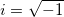

/math-90de06353074cd849a36cb9bcc9e3702.png "ImSin(C) = \frac{e^{iC}-e^{-iC}}{2i}")
Calculate the sin value for a complex.
or
where C is complex, and .
complex ImSin(complex cX)
cX
Return the sin value for the specified complex.
imSin(3+4i) = ; // 3.8537380379194-27.016813258004i complex c1 = 1+1i; complex c2; c2 = imSin(c1); c2 = ; // 1.298457581416+0.63496391478474i